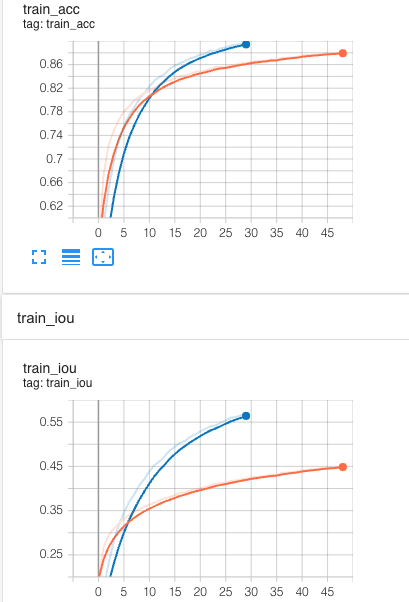
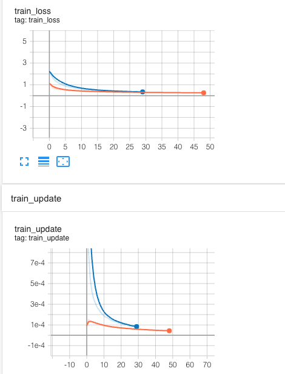
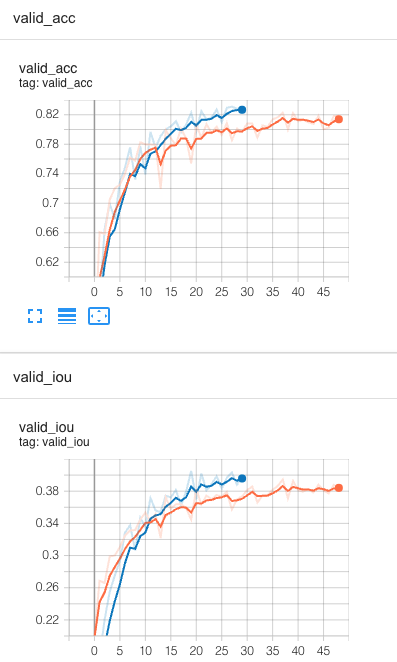
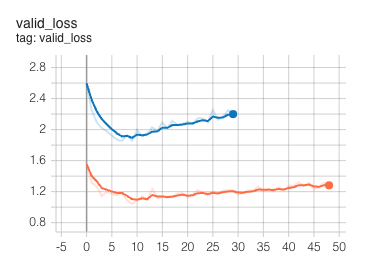
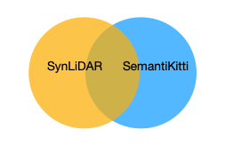

Abstract: 自己记录一下每天Master项目的Log
Train the model with transfer tech. does not work (Orange: real data tuning, Blue: synthetic data pretrain)




By looking at the board, we can see that the model is not learning properly, as if it is well pretrained, the starting point for the tuning (orange) line should be closer to the blue one, as we assume two domains should share some features in higher dimension, like this:

We are expecting the model to at least learn the intersection part of the knowledge from the synLiDAR, but in practice this is not the case, as shown by training progress.
The width of the canvas set in the SqueezeSegv2 is 2048, which may be a bit too big for SynLiDAR. -> Going to change the size to 1024 and train again
Going to use the pre-trained synLiDAR model to infer on the SemanticKitti directly, and test the performance:
A more detailed setting:
| train | FineTune? | Infer |
|---|---|---|
| Synthetic | Synthetic | Real |
| Synthetic | Real | Real |
| Real | Real | Real |
Going to evaluate above settings step by step.
Schedule:
The biggest problem for choosing a good baseline model is that you do not know which trick they actually played to achieve a better scoring for the accuracy, and it is often the case that such technique is not applicable for other dataset, that is, they cannot be transplanted to other tasks at all..